Twelve built-in providers.
Four external systems for tickets, code, and review, plus eight agent engines for the cycle. Configure them from the authenticated Admin UI; secrets are encrypted at rest in SQLite.
External systems
4Redmine
GitLab

GitHub
Gerrit
Agent engines
8Choose the engine per agent while the surrounding workflow stays the same. Aider, Goose, and OpenCode can each work with a broad set of LLM backends.
GitHub Copilot
Claude Code
Aider
Goose
Codex
Gemini CLI
OpenCode

CursorA project binds one integration per capability, so tickets can come from Redmine while code goes to GitLab. Multiple active integrations of the same provider can run in parallel, and a review-only project needs no issue tracker.